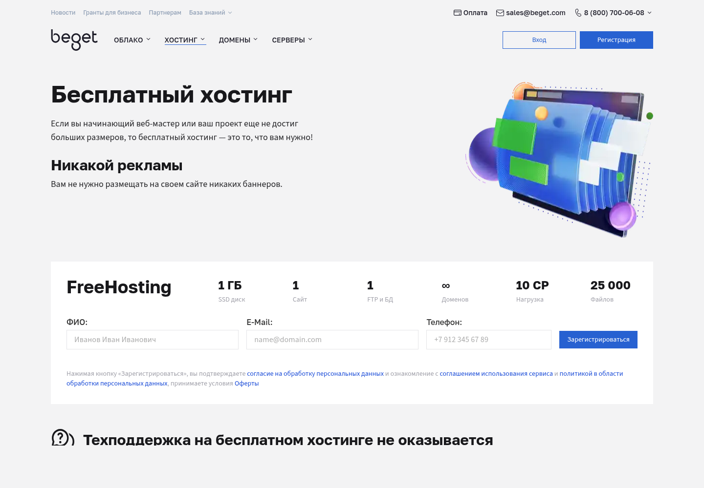
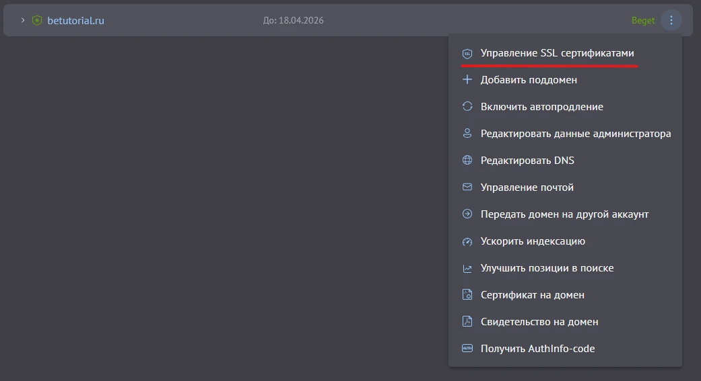
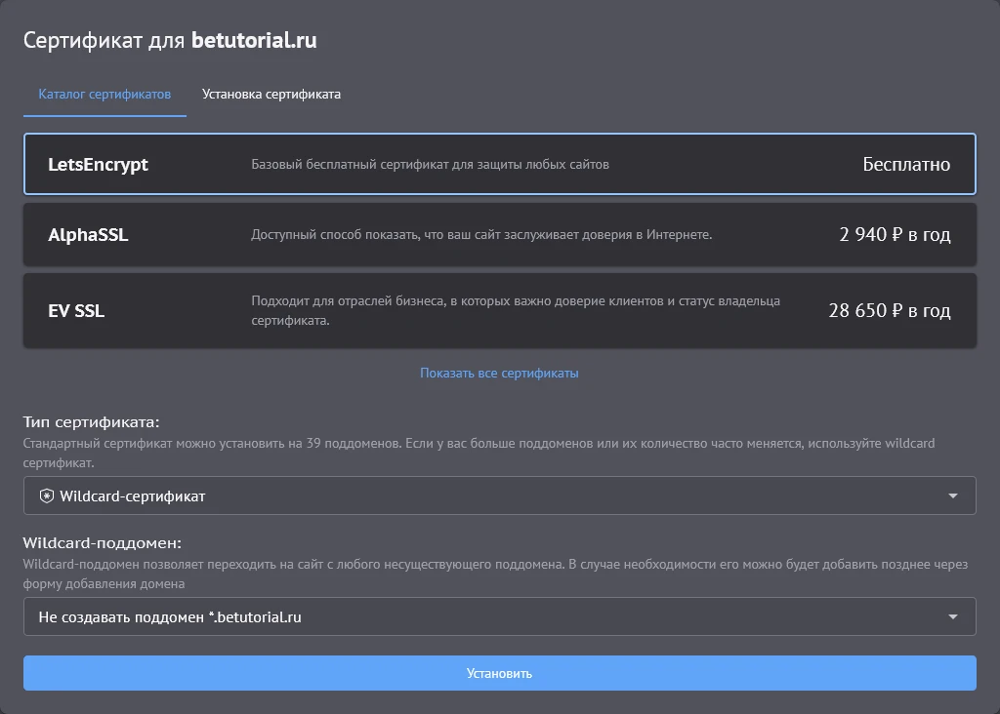
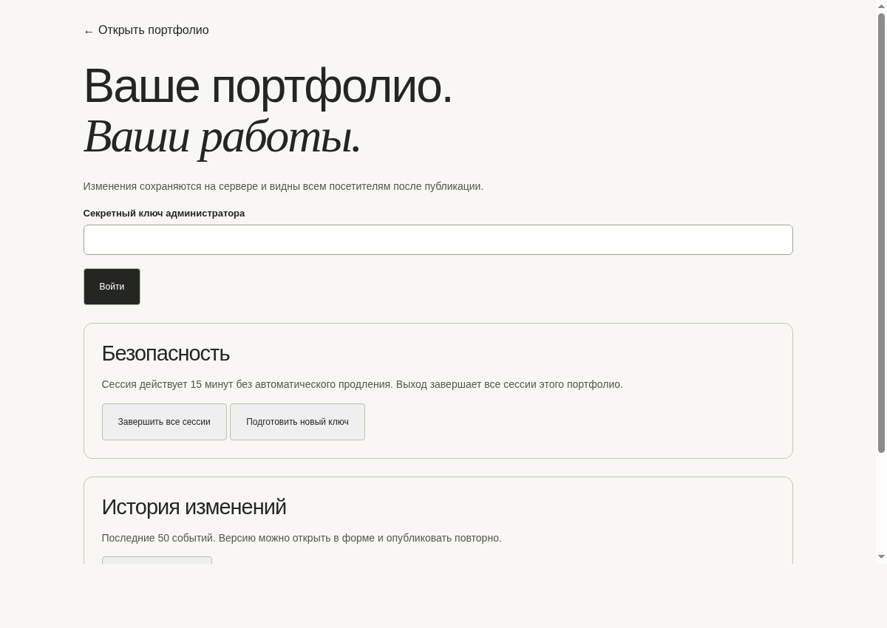
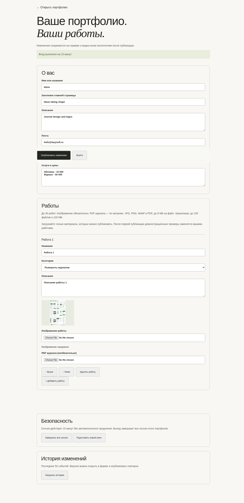

Пошаговая инструкция · без командной строки
Beget Free + PHP + MySQLКак разместить портфолио на бесплатном Beget
Для человека без технического опыта: создать сайт и базу, загрузить один ZIP, заполнить форму в браузере — готово.
Вам не понадобятсяSSH, терминал, npm, Node.js, Convex, VPS, phpMyAdmin или ручное редактирование файлов.
Подходит для передаваемого сайта-портфолио с админкой. Тексты, работы, изображения и история хранятся в вашей MySQL-базе на Beget.
Версия: 8 сентября 2026 года. Панель Beget может немного изменить внешний вид, но названия разделов сохраняют смысл.
Сначала прочитайте
Что входит в бесплатный Beget

Официальная страница Beget Free: 1 ГБ, один сайт и одна база.
Подходит
- портфолио и небольшая админка;
- PHP и MySQL;
- один сайт;
- небольшое число изображений.
Не входит
- Node.js;
- исходящая почта;
- гарантированная поддержка;
- ресурсы для тяжёлого сайта.
Официальные ограничения: 1 ГБ, до 25 000 файлов, одна MySQL-база, 96 МБ памяти на процесс. При превышении 10 CP в сутки сайт может перейти в режим кэширования — тогда вход в админку и сессии временно работают некорректно.
Не загружайте большие видео и исходники макетов. Для бесплатного тарифа разумно держать суммарный объём изображений сайта примерно до 40–50 МБ.
Весь путь
Семь понятных действий
1Зарегистрироваться
На официальной странице бесплатного хостинга.
2Создать сайт
Подключить свой домен или отдельный поддомен.
3Создать пустую MySQL-базу
Сохранить сервер, имя базы, пользователя и пароль.
4Включить HTTPS
Выбрать бесплатный сертификат Let’s Encrypt.
5Загрузить и распаковать ZIP
Через файловый менеджер Beget, без SSH.
6Открыть установочную страницу
Ввести четыре значения базы и одноразовый ключ.
7Войти в админку и проверить сайт
Сохранить ключ и скачать первую резервную копию.
Подготовьте заранее: персональный файл portfolio-beget-free.zip, свой домен или поддомен, доступ к почте и 20–30 минут спокойного времени.
Шаг 1
Зарегистрируйте бесплатный аккаунт
- Откройте https://beget.com/ru/hosting/free.
- Заполните ФИО, почту и телефон.
- Нажмите «Зарегистрироваться».
- Откройте письмо Beget и войдите в панель управления.
- Сохраните логин и пароль в надёжном месте.
https://beget.com/ru/hosting/free
На бесплатном тарифе техподдержка работоспособности сайта не оказывается. Эта инструкция поэтому содержит самостоятельную проверку каждого шага.
Что вы увидите в панели
Сайтысоздание и файлы
MySQLбаза для контента
Домены и поддоменыадрес и SSL
Не сообщайте пароль аккаунта разработчику. Для помощи достаточно адреса сайта и снимка ошибки без секретных данных.
Шаг 2
Создайте один новый сайт
- В панели откройте раздел «Сайты».
- Нажмите создание сайта.
- Укажите отдельную папку для нового сайта.
- Добавьте свой домен или отдельный поддомен и направьте его на этот сайт.
- Запишите полный адрес сайта.
Название / папкаportfolio
Доменportfolio.example.ru
Создать
Технический адрес вида login.beget.tech не подходит для защищённой админки: Beget не даёт заказать для него SSL. Нужен собственный домен или поддомен.
Отдельный поддомен, например portfolio.example.ru, не требует переноса основного сайта. Направьте только этот поддомен на Beget и привяжите его к новой папке.
Шаг 3
Создайте пустую базу MySQL
- Откройте раздел MySQL.
- Нажмите «Добавить базу данных».
- Придумайте имя и сильный уникальный пароль.
- Создайте базу и сохраните значения из панели.
Пользовательлогин_portfolio
Чаще всего сервер — localhost, но копируйте значение именно из своей панели. Префикс логина в имени базы и пользователя — нормальное поведение Beget.
База должна быть новой и пустой. Установщик специально откажется работать, если увидит таблицы этого сайта. Не используйте базу другого проекта.
phpMyAdmin открывать и импортировать SQL вручную не нужно: установочная страница сделает это сама.
Шаг 4
Включите бесплатный SSL
Админка работает только по защищённому адресу https://. В панели откройте «Домены и поддомены», нажмите меню с тремя точками у своего домена или поддомена и выберите управление SSL.

Официальный пример Beget: «Управление SSL сертификатами».
- Выберите Let’s Encrypt — Бесплатно.
- Нажмите «Установить».
- Дождитесь выпуска сертификата.
- Откройте сайт с https:// и убедитесь, что браузер не показывает предупреждение.
У технического домена login.beget.tech этого пункта нет — так и задумано. Не обходите предупреждение браузера: подключите свой домен/поддомен и выпускайте сертификат для него.
Проверка шага 4
Выберите именно бесплатный сертификат

Официальный пример Beget: Let’s Encrypt отмечен как бесплатный.
Правильный результат: адрес начинается с https://, возле адреса нет красного предупреждения, а страница открывается после обычного обновления.
Выпуск может занять некоторое время. Если домен только что подключён, сначала дождитесь обновления DNS. Для своего домена записи должны указывать на Beget.
Названия и снимки экрана взяты из официальной инструкции Beget по подключению SSL.
Шаг 5
Загрузите персональный ZIP
- Откройте «Файловый менеджер».
- Найдите папку созданного сайта.
- Откройте её на том уровне, где уже видна папка public_html.
- Нажмите «Загрузить файлы» и выберите portfolio-beget-free.zip.
- Выделите загруженный ZIP и нажмите «Распаковать».
📁 папка-вашего-сайта
├── 📁 public_html ← уже видна до загрузки
├── 📦 portfolio-beget-free.zip
└── после распаковки появятся файлы ниже
Не загружайте ZIP внутрь public_html. Архив распаковывается уровнем выше, чтобы приватные настройки базы не оказались доступны посетителям.
Если Beget спрашивает о замене существующих файлов на работающем сайте — отмените действие и свяжитесь с разработчиком.
Проверка шага 5
Сверьте расположение файлов
После распаковки структура должна выглядеть так:
📁 папка-вашего-сайта
├── 📁 public_html
│ ├── index.html
│ ├── admin.html
│ ├── install-beget.php
│ └── остальные файлы сайта
├── 📁 private ← обязательно рядом, не внутри
├── 🔑 INSTALL-KEY.txt
├── 📘 ИНСТРУКЦИЯ-BEGET.pdf
└── README.md
- Откройте или скачайте INSTALL-KEY.txt.
- Скопируйте единственную длинную строку.
- Сохраните её как пароль владельца сайта.
Не перемещайте private в public_html и не ставьте права 777. Не публикуйте ZIP и ключ: они дают доступ к установке и будущей админке.
Оставлять архив на сервере после успешной установки необязательно. Лучше скачать свою копию и удалить ZIP через файловый менеджер.
Шаг 6
Установите сайт через браузер
Подставьте свой домен и откройте адрес:
https://ВАШ-ДОМЕН/install-beget.php
Заполните пять полей:
Сервер базы данныхlocalhost
Пользователь базыиз панели Beget
Ключ установкииз INSTALL-KEY.txt
Установить сайт
После сообщения «Сайт установлен» установщик автоматически удаляет себя, серверную копию ключа и временные данные. Повторно открывать установочную страницу не нужно.
Если видите ошибку, не повторяйте много раз и не присылайте никому пароль базы. Сделайте снимок сообщения и отправьте разработчику адрес сайта.
Шаг 7
Войдите в админку
https://ВАШ-ДОМЕН/admin.html

- Вставьте ключ из INSTALL-KEY.txt.
- Нажмите «Войти».
- Откройте разделы контента и замените демо-материалы своими.
- Проверьте результат на обычной странице сайта.
Сессия короткая: через 15 минут бездействия потребуется войти снова. Кнопка отзыва доступа завершает все открытые сессии; история изменений сохраняет опубликованные версии.
После первого входа замените ключ в админке. Новый ключ сохраните в менеджере паролей. Старый перестанет работать.
Работа с сайтом
Замените демо-контент

- Измените имя, заголовок, описание и контакты.
- Проверьте названия четырёх разделов.
- Добавьте работы и загрузите JPG, PNG или WebP.
- При необходимости приложите PDF к отдельной работе.
- Нажмите публикацию и обновите обычный сайт.
Лимит одного файла — 8 МБ. Для Beget Free лучше готовить изображения до 1–2 МБ и не хранить на сайте видео. Большая резервная копия может не сформироваться из-за лимита PHP 96 МБ.
Перед крупным изменением нажмите «Скачать резервную копию». Файл JSON содержит контент, изображения и историю. Храните его вне Beget.
Финальная проверка
Убедитесь, что всё работает
- сайт открывается по https:// без предупреждения;
- главная и четыре раздела показывают работы;
- сайт удобно смотреть с телефона;
- /admin.html просит секретный ключ;
- правильный ключ входит, неправильный — нет;
- изменение текста появляется на обычном сайте;
- загружается небольшое тестовое изображение;
- скачивается резервная копия JSON;
- install-beget.php после установки больше не открывается;
- ZIP удалён с сервера, ключ хранится только у владельца.
Готово. Сайт и админка после установки работают автономно на Beget: Convex, Lazysoft и внешний VPS не участвуют.
Бесплатный аккаунт — хороший старт и демонстрационный вариант, но не обещание бесперебойной работы. Для коммерчески важного сайта используйте платный тариф и регулярные копии.
Если что-то не получилось
Типовые проблемы
Forbidden / 403Проверьте, что файлы сайта находятся именно в public_html выбранного сайта и присутствует index.html.
Установщик просит HTTPSСертификат ещё не включён или открыт адрес с http://. Вернитесь к шагам 4–5 инструкции.
«Проверьте реквизиты базы»Скопируйте из панели сервер, имя базы и пользователя; заново введите пароль. Не путайте пароль Beget с паролем базы.
«База не пустая»Создайте новую пустую базу. Установщик не удаляет чужие таблицы.
Админка внезапно выходитЧерез 15 минут это нормально. Если проблема повторяется сразу, возможен режим кэширования Beget Free из-за нагрузки.
Ошибка 503 или не грузится большой файлУменьшите файл. Бесплатный тариф ограничивает память и вычислительную нагрузку.
Не отправляйте в чат пароль Beget, пароль MySQL, установочный или администраторский ключ. Для диагностики нужны адрес сайта и снимок ошибки.
Официальные источники
Где проверить условия
Почему здесь нет Node.js: соглашение бесплатного сервиса разрешает PHP и Python. Официальная инструкция Beget по Node.js относится к другой схеме с SSH и Docker, поэтому для клиента подготовлена отдельная PHP/MySQL-версия.
Что передаёт разработчик: персональный ZIP с сайтом, текущими работами, одноразовым ключом и этой PDF-инструкцией. Архив нельзя выкладывать в открытый доступ.
Если понадобится больше
Платный тариф уместен, когда растут посещаемость и число изображений, требуется исходящая почта, гарантированная поддержка или бесплатный аккаунт регулярно переходит в режим кэширования.
Снимки интерфейса SSL принадлежат Beget и приведены для пояснения действий в панели.